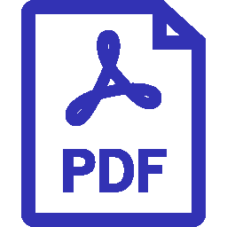

Google Scholar
Google Scholar DBLP
DBLP2026
-
DepUpgrade: Automating Dependency Upgrade through State-Path Exploration

International Conference on Automated Software Engineering (ASE), 2026
-
Type-aware LLM-based Test Generation for Python Programs
ACM Transactions on Software Engineering and Methodology (TOSEM), 2026
-
Fusing LLMs and Genetic Algorithm for High-Quality Unit Test Generation
ACM Transactions on Software Engineering and Methodology (TOSEM), 2026
-
Vulnerability Identification by Harnessing Inter-connected Multi-Source Information
Journal of Systems and Software (JSS), 2026
-
PGS: Effective LLM Code Refinement via Property-Oriented and Structurally Minimal Feedback
International Conference on Machine Learning (ICML), 2026
-
Efficient Bug Detection by Inferring Implicit API Contract of Pointer State Transition
International Conference on Dependable Systems and Networks (DSN), 2026
-
Beyond Superficial Tests: Adversarial Refinement for Reliable Property-Based Testing
Annual Meeting of the Association for Computational Linguistics (ACL Findings), 2026
-
Code2Bench: Scaling Source and Rigor for Dynamic Benchmark Construction
International Conference on Learning Representations (ICLR), 2026
-
HapCheck: DSL-Based Static Bug Detection Framework for OpenHarmony
International Conference on Software Engineering, SEIP Track (ICSE), 2026
-
ModularEvo: Evolving Multi-Task Models via Neural Network Modularization and Composition
International Conference on Software Engineering (ICSE), 2026
2025
-
Scalable Large-Scale Multi-Granularity Code Clone Detection via Clustering Search and Pre-trained Models
IEEE Transactions on Software Engineering (TSE), 2025
-
Context-Enhanced Vulnerability Detection Based on Large Language Models
ACM Transactions on Software Engineering and Methodology (TOSEM), 2025
-
UICOMPASS: UI Map Guided Mobile Task Automation via Adaptive Action Generation
Empirical Methods in Natural Language Processing (EMNLP), 2025
-
Reference-Based Retrieval-Augmented Unit Test Generation
ACM Transactions on Software Engineering and Methodology (TOSEM), 2025
-
NeMo: A Neuron-Level Modularizing-While-Training Approach for Decomposing DNN Models
ACM Transactions on Software Engineering and Methodology (TOSEM), 2025
-
CABS: Conflict-Aware and Balanced Sparsification for Enhancing Model Merging
International Conference on Machine Learning (ICML), 2025
-
Code Property Graph Meets Typestate: A Scalable Framework to Behavioral Bug Detection
International Conference on Software Maintenance and Evolution (ICSME), 2025
IEEE TCSE Distinguished Paper Award
-
Enhanced Vulnerability Localization: Harmonizing Task-Enhanced Tuning and General LLM Prompting
International Conference on Software Maintenance and Evolution (ICSME), 2025
-
Software Engineering for OpenHarmony: A Research Roadmap
ACM Computing Surveys (CSUR), 2025
-
HapTest: The Dynamic Analysis Framework for OpenHarmony
ACM International Conference on the Foundations of Software Engineering (FSE), Industry Track, 2025
-
Understanding Vulnerabilities in Software Supply Chains
Empirical Software Engineering (EMSE), 2025
-
Enhancing Automated Vulnerability Repair through Dependency Embedding and Pattern Store
International Conference on Software Analysis, Evolution and Reengineering (SANER), 2025
2024
-
DynaMO: Protecting Mobile DL Models through Coupling Obfuscated DL Operators
International Conference on Automated Software Engineering (ASE), 2024
-
LLM-Based Java Concurrent Program to ArkTS Converter
International Conference on Automated Software Engineering, Tool Track (ASE), 2024
-
API Misuse Detection via Probabilistic Graphical Model
International Symposium on Software Testing and Analysis (ISSTA), 2024
-
Model-less Is The Best Model: Generating Pure Code Implementations to Replace On-device DL Models
International Symposium on Software Testing and Analysis (ISSTA), 2024
-
ProveNFix: Temporal Property guided Program Repair
International Conference on the Foundations of Software Engineering (FSE), 2024
ACM SIGSOFT Distinguished Paper Award
-
Modularizing while Training: A New Paradigm for Modularizing DNN Models
International Conference on Software Engineering (ICSE), 2024
ACM SIGSOFT Distinguished Paper Award
-
Investigating White-Box Attacks for On-Device Models
International Conference on Software Engineering (ICSE), 2024
-
Investigating and Detecting Silent Bugs in PyTorch Programs
International Conference on Software Analysis, Evolution and Reengineering (SANER), 2024
IEEE TCSE Distinguished Paper Award
-
Reducing False Positives of Static Bug Detectors through Code Representation Learning
International Conference on Software Analysis, Evolution and Reengineering (SANER), 2024
2023
-
Reusing Convolutional Neural Network Models through Modularization and Composition
ACM Transactions on Software Engineering and Methodology (TOSEM), 2023
-
Automated Fixing of Web UI Tests via Iterative Element Matching
International Conference on Automated Software Engineering (ASE), 2023
-
ModelObfuscator: Obfuscating Model Information to Protect Deployed ML-based Systems
International Symposium on Software Testing and Analysis (ISSTA), 2023
-
Automated Repair of Programs from Large Language Models
International Conference on Software Engineering (ICSE), 2023
-
Reusing Deep Neural Network Models through Model Re-engineering
International Conference on Software Engineering (ICSE), 2023
2022
-
Patching Weak Convolutional Neural Network Models through Modularization and Composition
International Conference on Automated Software Engineering (ASE), 2022
-
Program Vulnerability Repair via Inductive Inference
International Symposium on Software Testing and Analysis (ISSTA), 2022
-
Trust Enhancement Issues in Program Repair
International Conference on Software Engineering (ICSE), 2022
Before 2022
-
Overfitting in Program Repair and Program Synthesis
PhD Dissertation, National University of Singapore, 2021
-
Scalable Fuzzing of Program Binaries with E9AFL
International Conference on Automated Software Engineering, Tool Track (ASE), 2021
-
APIfix: Output-Oriented Program Synthesis for Combating Breaking Changes in Libraries
Object-Oriented Programming, Systems, Languages, and Applications (OOPSLA), 2021
-
Automated Patch Backporting in Linux (Experience Paper)
International Symposium on Software Testing and Analysis (ISSTA), 2021
Distinguished Artifact Award
-
Beyond Tests: Program Vulnerability Repair via Crash Constraint Extraction
ACM Transactions on Software Engineering and Methodology (TOSEM), 2021
-
Feedback-Driven Semi-Supervised Synthesis of Program Transformations
Object-Oriented Programming, Systems, Languages, and Applications (OOPSLA), 2020
-
Binary Rewriting without Control Flow Recovery
Programming Language Design and Implementation (PLDI), 2020
-
Interactive Patch Generation and Suggestion
Automated Program Repair Workshop (APR @ ICSE), 2020
-
Fuzz Testing based Data Augmentation to Improve Robustness of Deep Neural Networks
International Conference on Software Engineering (ICSE), 2020
-
ACM SIGSOFT International Symposium on Software Testing and Analysis (ISSTA), 2019
-
Android Testing via Synthetic Symbolic Execution
International Conference on Automated Software Engineering (ASE), 2018
-
Repairing Crashes in Android Apps
International Conference on Software Engineering (ICSE), 2018
-
Test-equivalence Analysis for Automatic Patch Generation
ACM Transactions on Software Engineering and Methodology (TOSEM), 2018
Work before PhD
-
Write-back aware shared last-level cache management for hybrid main memory
53rd Design Automation Conference (DAC), 2016
* co-first author # corresponding author